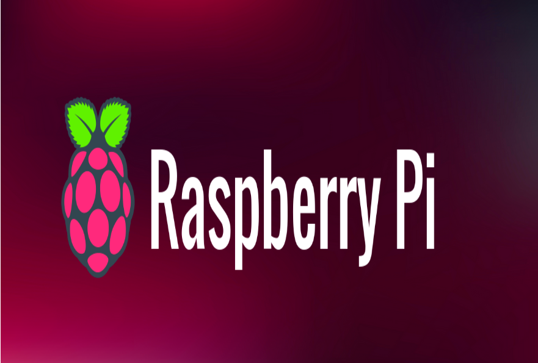

Poste de Développement Sécurisé
Contexte : Dans le cadre d'un projet académique, j'ai participé à l'installation et à la configuration complète d'un serveur multi-services (Web, Base de données, Fichiers) pour un comité d'entreprise. L'objectif principal était de sécuriser et d'optimiser le système en suivant les recommandations de l'ANSSI.
Compétences techniques mobilisées :
Système : Administration Linux (Debian/Ubuntu) sur Raspberry Pi 400.
Sécurité : Mise en œuvre des recommandations de l'ANSSI (R33, R36, R38), gestion fine des droits sudo (visudo) et sécurisation des accès SSH par clés publiques/privées.
Services Web & Data : Installation et configuration d'un serveur Apache et d'un SGBD MariaDB/SQL.
Réseau : Configuration des services réseau et synchronisation temporelle (NTP).
Mes réalisations concrètes :
Gestion des utilisateurs : Création d'une arborescence sécurisée avec une gestion rigoureuse des groupes et des permissions.
Développement : Déploiement d'une application de gestion de séances de cinéma en PHP connectée à une base de données SQL.
Automatisation & Audit : Utilisation de scripts de vérification pour assurer la conformité du système aux exigences de sécurité.
Documentation : Rédaction d'un rapport technique détaillé en anglais.